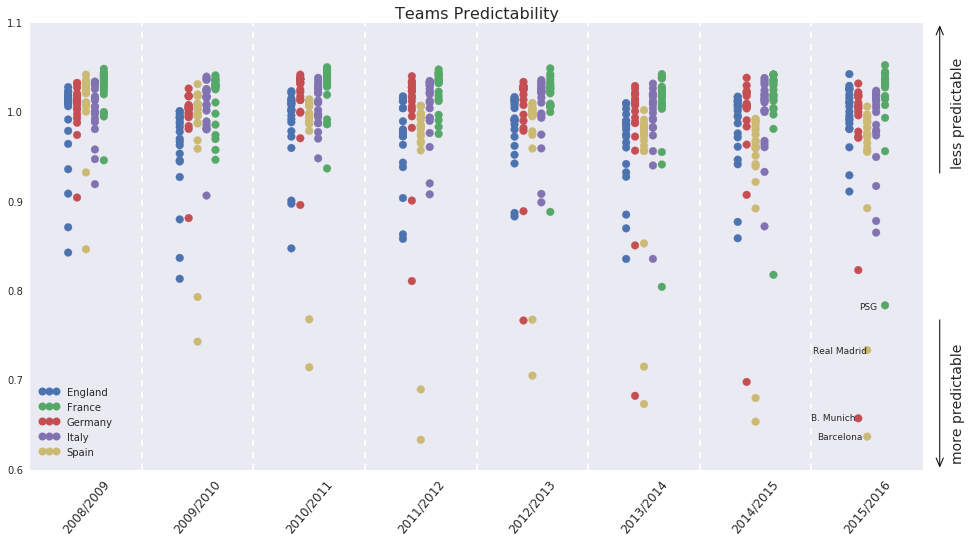

Data Visualization
The European soccer database.Applied Data Science minor.
Football is a sport that is played by a lot of people, in the most european countries football is the sport that is watched the most of all. The football bussines these days is so big that it just became a money game. So ofcourse there are a lot of bet offices where you can bet on matches, and what would be better then to know where you should put your money?
I play football myself, I love the game, the team play and whole atmosphere around a match. Ofcourse I also
do place bets sometimes and unlucky for me I don't always win. But I wanted to find out if it's possible
to make such a prediction.
Datasetsource:
I made some plots after I made use of some machine learning techniques. The plot I made was about a teams predictability, so if you could predict wether a team would end up on becomming champion or would have to play playoffs.
Shortly after making these plots I found out that it was really hard to make some usefull graphs in d3 with the dataset that I had chosen. This was because of the multiple many to many relationships between the tables. After I found this out, I went into an other way and that was if I could find out if there is a relation between playing home game's or away games.
Below you can see the outcome off the bundesliga (season 2015/16) the bar graph is devided by the outcome of the matches.
Where champions are born!
In the diagram above you can see the total points scored in the Belgium pro league in the season of 2015/2016
In the diagram above you can see how many points were scored in home games of the Belgium pro league in the season of 2015/16